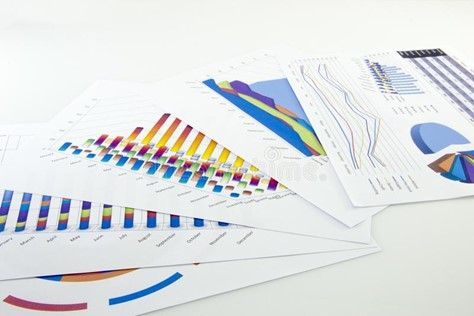
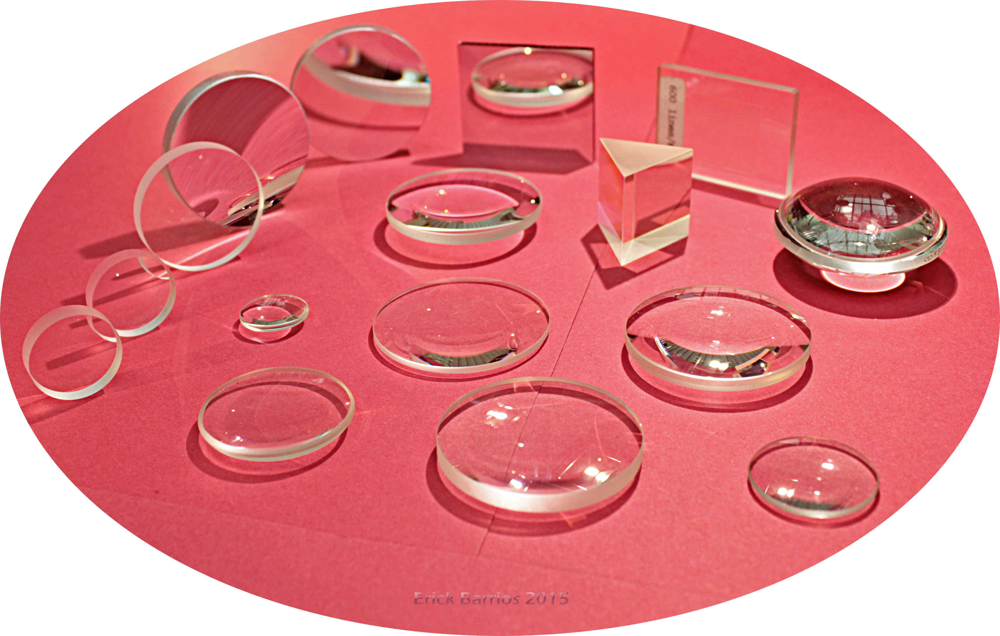
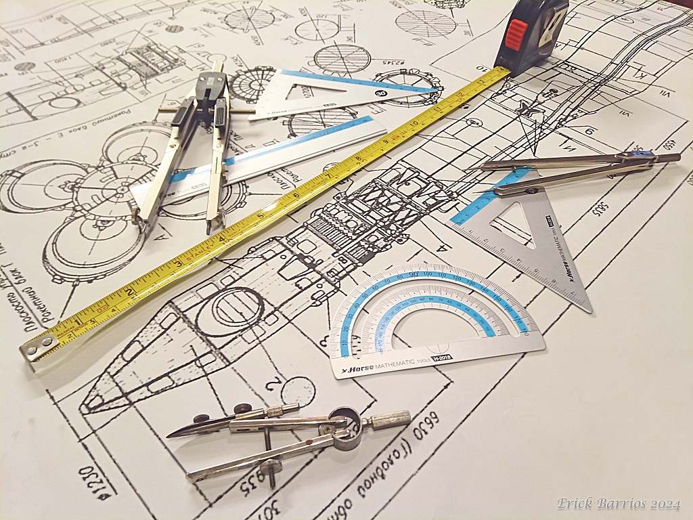
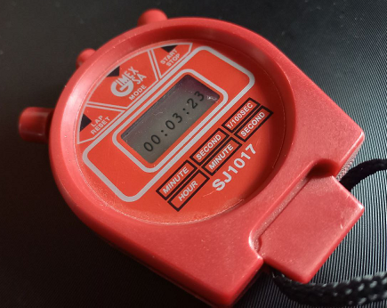

Reportes y Bitácoras
Sugerencias para redactar un Reporte de laboratorio e implementar una Bitácora de Laboratorio.

Manejo de Equipo
Explicamos los metódos de limpieza y cuidado con los princiales equipos de un laboratorio de Óptica.

Alineación Óptica Básica
Explicamos los metódos de alineación más comunes para la implementación de un eje óptico y la colocación de espejos y lentes.
Conceptos Básicos de Calidad Óptica
Presentamos conceptos importantes previos a la adquisión de equipos ópticos.

Incertidumbres y Análisis de Mediciones
Presentamos los conceptos elementales para el anális de mediciones y sus incertidumbres, tanto de forma numérica como gráfica.

Tiempo de Reacción
La medición del tiempo es una variable experimental, aquí explicamos como cuantificarlo usando un cronómetro y un péndulo simple.